Exploring US Gun Violence Through Forecasting Techniques in R
- Is gun violence really so unimaginable?
- The data
- Forecasting approach
- How many Americans do we expect to die each week?
- Visualizing gun violence from 2014-18
- Setting up a benchmark forecast
- Moving Average Forecasts
- ETS Forecasts
- ARIMA Forecasts
- Linear Regression
- TBATS
- Best model SMA(60) forecasts
- Final Thoughts on Gun Violence
“This wicked act of mass murder is pure evil, hard to believe, and frankly, something that is unimaginable” –Donald Trump, commenting on the Pittsburgh Synagogue Shooting on Oct. 27th, 2018
Is it really so unimaginable? How many people die every week in the USA from gun violence?
I decided to do a little investigating myself on gun violence in America. In fact, I had already done most of this analysis many months ago, but then, in the wake of the Pittsburgh shooting, decided to finish the blog post. Then just this past week, two more mass shootings occurred in El Paso and Dayton. Of course, nothing really has changed since the Pittsburgh attack one year ago. The sad truth is that I knew there would be another mass shooting that would prompt me to finally finish this post.
Americans have become numb to mass shootings. Congress still refuses to make any substantive changes in laws that would make it more difficult for people to get access to guns. My goal is to confront us with a more concrete understanding of the consequence of having so many guns. At which weekly/monthly/yearly number do you draw the line? When is your right to own a gun overshadowed by the yearly death or injury of 40,000+ people?
The data
Our analysis is based on the compiled gun violence reports listed on www.gunviolencearchive.org from 2013 to 2018 (https://www.kaggle.com/jameslko/gun-violence-data/home) . That website’s goal is to:
“provide a database of incidents of gun violence and gun crime. To that end we utilize automated queries, manual research through over 2,000 media sources, aggregates, police blotters, police media outlets and other sources daily. Each incident is verified by both initial researchers and secondary validation processes. Links to each incident are included in the incident report to provide further information on each incident for researchers, advocate groups, media and legislative interests. The incident reports provide a starting point for researchers, media and legislative interests to add texture to our raw data.”
The question I wanted to answer using these data was this:
How many people in the USA could we expect to be either killed or injured via gun violence in any given week?
In order to answer question, we will use a variety a time-series forecasting techniques. So this post will be partly a tutorial in using different forecasting methods in R. But really, my interest was in visualizing guns deaths and injury data in order to understand the extent of the problem in the USA.
Basic Forecasting Approach
I will aggregate the incidents into weekly counts from 2014 to 2016, use 2017 as a validation period for selecting the most effective forecasting method (measured by validation RMSE), and then forecast the weekly gun violence casualities for the entire year of 2018 to the present day in 2019. I will then look at the forecast for this week (August 5th-9th) to see how many people were forecasted to be killed or injured by gunfire.
The dataset contains almost 240,000 reported incidents of gun violence (deaths, injuries, suicides) from 2014 to 2018.
The data lists the number of people killed and injured by each act of gun-related violence. For our purposes here, we will combine these two numbers into one “casualty” number. We will therefore be forecasting the number of weekly gun-related deaths and injuries.
df <- df[,-c(1,4,5)]
#sum killed and injured
df <- df %>%
mutate(casualty = n_killed + n_injured)
#erase other columns for global forecasts
df <- df[,c(1,27)]
#first convert to date objec then convert xts
df$date <- as.Date(df$date)
Once we’ve converted the dates into date objects and removed all the other columns, we can create our training and testing sets. The data from the end of 2013 looks inaccurate, so I’ve only included from 2014 onwards.
#first create weekly aggregates
week_agg <- df %>%
group_by(date = floor_date(date, unit = '1 week'))%>%
summarize(sum_kill = sum(casualty))%>%
filter(date > as.Date('2014-01-01'))%>%
filter(date < as.Date('2018-01-01'))
valid <- df %>%
group_by(date = floor_date(date, unit = '1 week'))%>%
summarize(sum_kill = sum(casualty))%>%
filter(date > as.Date('2017-01-01'))
full <- df %>%
group_by(date = floor_date(date, unit = '1 week'))%>%
summarize(sum_kill = sum(casualty))%>%
filter(date > as.Date('2014-01-01'))
Gun Violence By the Numbers
What did gun violence look like from 2014-2018?
df %>%
group_by(date = floor_date(date, unit = '1 week'))%>%
summarize(sum_kill = sum(casualty))%>%
filter(date > as.Date('2014-01-01'))%>%
ggplot(aes(date, sum_kill))+
geom_line()+
geom_vline(xintercept = as.numeric(as.Date('2017-01-01')), color='red')+
labs(title='Weekly Gun casualties (deaths + injuries) 2014-18', y='Casualties', x='Time')
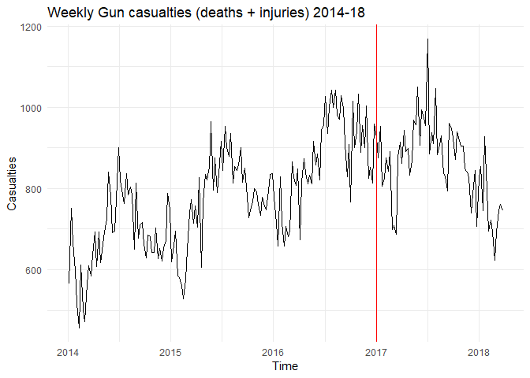
The red vertical line is where our validation period will start. Based on this, we can see an increasing trend in the number of gun casualties and also strong monthly seasonality. Eyeballing the average, we see about 800 gun deaths/injuries each week. Further, we can see that gun violence peaks in summer months and dips around January and February in each year. Based on this, we might expect a forecasting method than can deal with trend and seasonality to perform best.
Let’s look at some more interesting visuals. These will help us understand week of year seasonality and also better gauge the year over year trend.
library(TSstudio)
ts_seasonal(full)
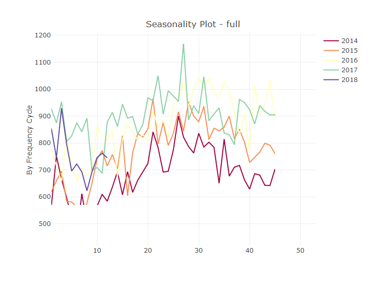
This plot reveals the increasing trend (year over year) in gun violence and also shows that in every year, incidents peak around week 26 (June) and reaches their nadir just short of week 10 (mid-March).
ts_heatmap(full)
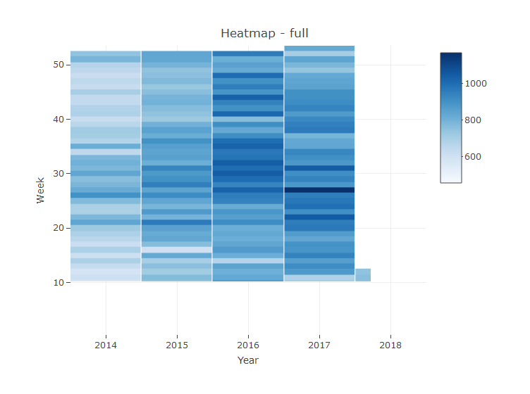 Again here we see most gun violence occuring in the middle of the year, though there have been some violent weeks in the first three weeks of January. This appears to align with the commonly-heard refrain that the summer heat may have some causative role in violent behavior.
In order to do any forecasting, we’ll need to convert these dataframes into time series objects. We’ll use the timetk package to do this for us.
week_train <- tk_ts(week_agg, start=c(2014,1), end=c(2017,1), frequency=52)
week_test <- tk_ts(valid, start=c(2017,1), end = c(2018,12), frequency=52)
week_full <- tk_ts(full, start=c(2014,1), end = c(2018,12), frequency=52)
Forecast Benchmark: The Seasonal Naive Forecast
Now that we have set up our training/testing periods as time series objects, we can begin forecasting. But before we try any more advanced methods, we should first have a benchmark against which to judge these methods. Because we found a seasonal pattern earlier, we’ll use the seasonal naive method to forecast the numbers in the validation set. Basically, this simple technique predicts that the value for the season in 2017 is whatever the value for the same season index was in the previous year. For example, if week 4 had 500 casualties in 2016, then our best guess is that week 4 in 2017 will also have 500 casualties. If we find a method that performs better than the seasonal naive, we’ll then train the full data using that method and predict through the end of 2018.
Here is what our seasonal naive predictions look like.
nv <- snaive(week_train, h=52+12)
autoplot(week_train, series='Training')+
autolayer(nv, series='Naive Prediction')+
autolayer(week_test, series='Test')+
labs(title='Looking at seasonal naive predictions in validation period', y='Casualties')
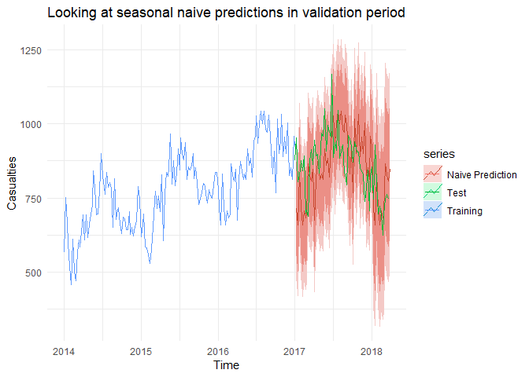
Overall, these predictions are pretty good: for the most part the actual values from 2017-2018 fit well within the 80 and 95% prediction intervals.
To really quantify the forecast performance, let’s look at the seasonal naive RMSE.
accuracy(nv, week_test)
## ME RMSE MAE MPE MAPE MASE
## Training set 95.628571 123.6824 105.70476 11.22117399 12.71244 1.0000000
## Test set 7.063492 118.5526 93.63492 0.07539421 10.82823 0.8858155
## ACF1 Theil's U
## Training set 0.04804174 NA
## Test set 0.38611083 1.294523
The seasonal naive method will be hard to beat with an RMSE of 118. Curiously the performance on the test set is better than in the training period; this is normally a symptom of overfitting. However here, I’m thinking it’s just due to the fact that 2018 is more similar to 2017, than either 2014, 2015, and 2016 are to each other.
Now that we have a benchmark, we can look at some other forecasting techniques to find one that seems to do better than others. We’ll compare three other methods: exponential smoothing, linear regression, and a moving average.
Moving Average Forecasts
The smooth package contains a function that will automatically select the order of the moving average based on the AIC score.
library(smooth)
library(smooth)
mov_ag <- sma(week_train, h=52, silent=FALSE, intervals = 'p',level = .80) #order lets you choose window
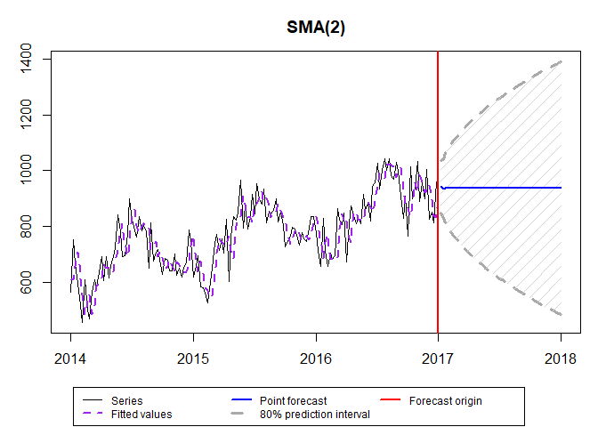
mov_ag$forecast
## Time Series:
## Start = c(2017, 2)
## End = c(2018, 1)
## Frequency = 52
## [1] 943.0000 935.0000 939.0000 937.0000 938.0000 937.5000 937.7500
## [8] 937.6250 937.6875 937.6562 937.6719 937.6641 937.6680 937.6660
## [15] 937.6670 937.6665 937.6667 937.6666 937.6667 937.6667 937.6667
## [22] 937.6667 937.6667 937.6667 937.6667 937.6667 937.6667 937.6667
## [29] 937.6667 937.6667 937.6667 937.6667 937.6667 937.6667 937.6667
## [36] 937.6667 937.6667 937.6667 937.6667 937.6667 937.6667 937.6667
## [43] 937.6667 937.6667 937.6667 937.6667 937.6667 937.6667 937.6667
## [50] 937.6667 937.6667 937.6667
So we see here the function has chosen to include the previous two values in its weighted average forecast. The forecast centers on a weekly forecasted gun-casualty count of 937.66 victims. What’s the test set RMSE?
accuracy(mov_ag$forecast, week_test)
## ME RMSE MAE MPE MAPE ACF1
## Test set -53.81197 103.8181 79.44012 -7.185531 9.607307 0.4588112
## Theil's U
## Test set 1.239714
At 103.81 we do indeed see an improvement over the seasonal naive. But by averaging the previous two values, this is basically generating a naive forecast. What if we used a longer trailing window?
Here’s a little loop that displays the trailing window that gives the best RMSE on the holdout set. In order words, we are looking for the trailing window value (i.e., “order”) that results in the lowest test set RMSE.
acc_vec <- vector()
for (i in seq(1:length(week_train))){
m <- sma(week_train, h=52, order=i, silent=TRUE)
acc_vec[i] <- accuracy(m$forecast, week_test)[2]
}
print(acc_vec)
## [1] 98.77169 103.81811 95.82749 91.90076 89.88488 89.21019 89.49096
## [8] 90.32895 90.54940 90.76091 90.72195 91.32046 91.96995 92.79106
## [15] 92.88641 93.03644 93.25338 93.20534 93.49301 93.56363 93.96578
## [22] 94.20065 94.65636 95.43251 96.31744 97.49234 98.48558 99.52867
## [29] 100.38965 100.90151 101.51170 101.66618 102.15958 102.04806 102.20032
## [36] 101.90266 101.32311 100.95432 100.48994 100.06889 99.04318 98.20768
## [43] 97.16409 96.35411 95.42641 94.10827 92.90879 91.61714 90.56862
## [50] 89.59615 88.83817 88.04931 87.29319 86.66675 86.12850 85.94221
## [57] 85.78700 85.73484 85.68495 85.61496 85.65936 85.74502 85.77729
## [64] 86.05982 86.31411 86.64319 87.05269 87.54654 88.17826 88.89105
## [71] 89.52485 90.01936 90.51104 90.94765 91.48718 92.04741 92.47174
## [78] 92.76432 93.07641 93.25603 93.51439 93.82095 94.08007 94.43294
## [85] 94.62582 94.85463 95.07466 95.27061 95.31670 95.39570 95.39869
## [92] 95.38229 95.43389 95.28763 95.12997 94.93521 94.71497 94.52912
## [99] 94.44789 94.42576 94.45454 94.52148 94.58393 94.59016 94.59599
## [106] 94.54510 94.54431 94.67587 94.86162 95.13715 95.49326 95.87941
## [113] 96.29514 96.86133 97.34535 97.90065 98.52102 99.24085 99.94441
## [120] 100.67069 101.46597 102.27310 103.05490 103.86356 104.63527 105.40007
## [127] 106.18963 106.92434 107.75029 108.44458 109.12189 109.80527 110.50968
## [134] 111.25940 111.93692 112.61519 113.24858 113.93462 114.57317 115.21050
## [141] 115.78243 116.28054 116.80942 117.26151 117.70867 118.13335 118.48232
## [148] 118.87699 119.24277 119.66098 120.04872 120.53967 121.02931 121.45995
## [155] 121.89561 122.26613 122.75090
hist(acc_vec)
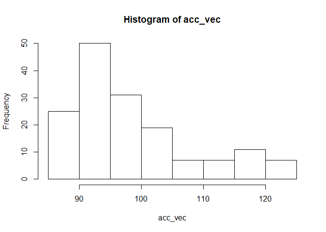
We can see here that actually there are many window sizes that lead to RMSEs less than 100. Which was the one that led to the minimum RMSE?
#which order was lowest rmse?
which.min(acc_vec)
## [1] 60
#check rmse of lowest.
acc_vec[60]
## [1] 85.61496
So we learned that an average of the previous 60 weeks leads to the best performance on the test set. Here’s what the predictions would look like from such a model.
best_mov_ag <- sma(week_train, h=52, order = 60, silent=FALSE, intervals = 'p',level = .80)
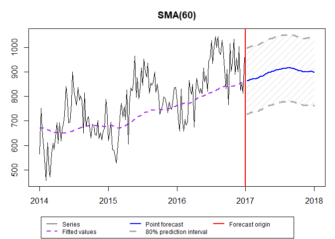
Maybe we’ve overfit by including 60 past observations, but the predictions look fairly realistic and seem to capture the mid-year peaks and the linear trend.
ETS/STL: Error Trend Seasonality Forecasts
Next we’ll look exponential smoothing, which is very similar to the weighted average method above, except that the weights decay exponentially such that past observations can be weighted very little, while recent ones can be weighted more heavily.
Actually, after some warning messages popped up, we’ll let the stlf() function automatically select the appropriate type of errors, trend, and seasonality. We chose this because ets() can’t handle weekly data well (it does best with monthly or yearly periodicity).
ets_mod <- stlf(week_train, s.window=53, t.window=3)
ets_fc <- forecast(ets_mod, h=52+12)
autoplot(week_train, series='Training')+
autolayer(ets_fc, series='Forecasts')+
autolayer(week_test, series='Test set')+
labs(title='ETS(ANN) forecasts', y='Casualties')
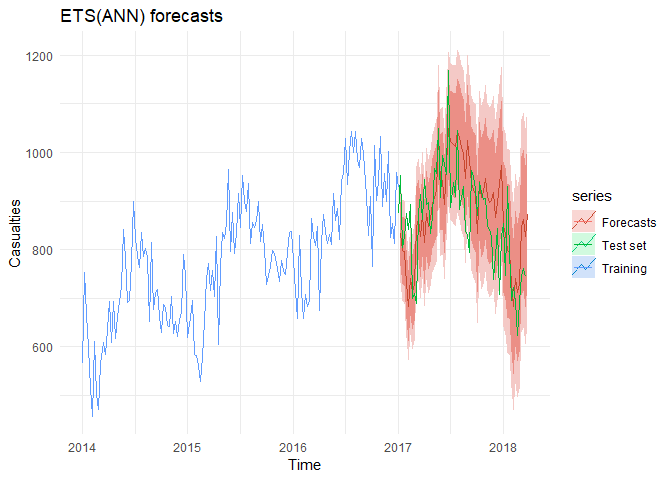
accuracy(ets_fc, week_test)
## ME RMSE MAE MPE MAPE MASE
## Training set 4.884399 50.94152 40.19315 0.3048338 5.370339 0.3802397
## Test set -22.184454 91.50037 71.86630 -3.2381544 8.627482 0.6798776
## ACF1 Theil's U
## Training set -0.07524269 NA
## Test set 0.42033628 1.037612
As expected, the test set RMSE is much worse the training RMSE. It’s also quite a bit worse than the SMA(60) forecasts, but only slightly worse than the seasonal naive RMSE of 118.
The forecasts are essentially taking the last value and using it to as the forecast for every week in the test set. Note, however, that the validation set does manage to stay within the 95% prediction interval.
ARIMA Model Forecasts
Let’s try using the auto.arima() function to forecast gun casualties. Basically this technique requires stationarity (thus the differencing, or ‘integrating’) and uses previous periods’ casualties, along with previous periods’ errors in forecasted casualties, to make forecasts.
arim_mod <- auto.arima(week_train)
arim_fc <- forecast(arim_mod, h=52+12)
autoplot(week_train, series='Training')+
autolayer(arim_fc, series='Arima Forecast')+
autolayer(week_test, series='Test')+
labs(title='Auto.arima(2,0,1)[0,0,1] with drift model', y='Casualties')
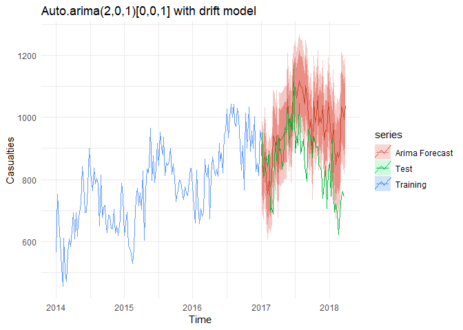
accuracy(arim_fc, week_test)
## ME RMSE MAE MPE MAPE
## Training set 0.5908973 59.12539 38.22942 -0.2909841 4.760482
## Test set -104.5213590 150.90122 125.75885 -13.3346981 15.596364
## MASE ACF1 Theil's U
## Training set 0.3616622 -0.000923584 NA
## Test set 1.1897179 0.488843899 1.790788
ARIMA seems to be overpredicting quite a bit in the test period. As a result the RMSE is much worse than the seasonal naive.
Linear Regression with trend and seasonality
Here we use our standard linear model to forecast gun casualties. We’ll use the tslm() function to do this, since it will automatically create trend and seasonal input variables for us.
lm_mod <- tslm(week_train ~ trend + season)
lm_fc <- forecast(lm_mod, h=52+12)
autoplot(week_train, series='Training')+
autolayer(lm_fc, series='LM Forecast')+
autolayer(week_test, series='Test')+
labs(title='Linear model', y='Casualties')
accuracy(lm_fc, week_test)
## ME RMSE MAE MPE MAPE
## Training set -1.450384e-15 48.30252 37.37849 -0.3958113 4.919251
## Test set -1.075405e+02 145.77192 121.78962 -13.6233877 15.172923
## MASE ACF1 Theil's U
## Training set 0.3536122 0.1205368 NA
## Test set 1.1521678 0.5119631 1.739141
We see the same problem: the linear model has tended to overforecast the later months leading to a fairly dismal RMSE of 145. It looks like we might instead want some kind of damped trend to capture the fact that last months of 2018 had lower casualties than previous years.
TBATS Forecasts
For our final model, we’ll try the full-automated TBATS method that will add trigonometric terms and automatically do a Box-cox transform. It’s also capable of detecting multiple seasonalities. Because it’s all automated, it can sometimes take a while to train.
tb_mod <- tbats(week_train)
tb_fc <- forecast(tb_mod, h=52+12)
autoplot(week_train, series='Training')+
autolayer(lm_fc, series='TBATS Forecast')+
autolayer(week_test, series='Test')+
labs(title='TBATS model', y='Casualties')
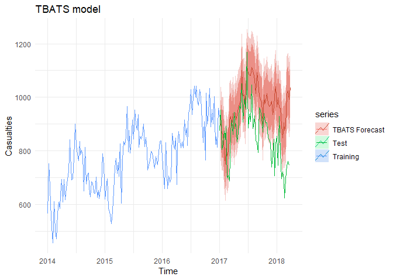
accuracy(tb_fc, week_test)
## ME RMSE MAE MPE MAPE MASE
## Training set 9.704205 56.45445 44.76869 0.7395821 5.848981 0.4235258
## Test set -58.459758 104.44846 85.27811 -7.6785804 10.503240 0.8067575
## ACF1 Theil's U
## Training set -0.07856625 NA
## Test set 0.40006771 1.220123
Overall, we see it was tricked by the relatively lower seasons of 2018. The RMSE is just a little bit better than the seasonal naive method.
Final forecasts using SMA(60)
So based on the performance on the test set, we’ll re-fit our data using an SMA(60) to forecast this week’s gun casualty numbers.
full_mov_ag <- sma(week_full, h=104, order = 60, silent=FALSE, intervals = 'p',level = .80)
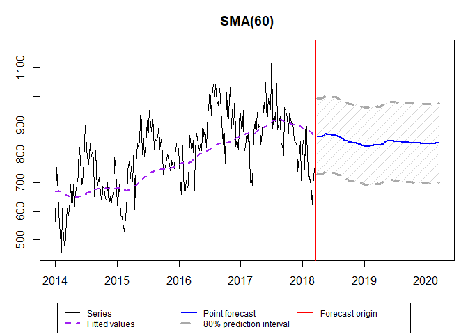
Gun deaths and injuries forecasted this week: 837
Let’s see what the forecasts are for this week, the 32nd week of 2019.
week(today())
## [1] 32
full_mov_ag$forecast[52+32]
## [1] 837.3635
#let's also get next week's
full_mov_ag$forecast[52+33]
## [1] 837.191
With this weekly forecast number, we would expect a weekly rate of about 2.6 gun deaths/injuries for every 1,000,000 US citizens. Of course, this is an average, and for some areas, the rates are much, much higher.
options(scipen = 999)
round(full_mov_ag$forecast[52+33]/325700000, 7)*1000000
## [1] 2.6
In other words, in a city with a population similar to Austin, Texas or San Jose, California, we might expect roughly 2.6 people to be killed or injured by guns in a given week.
Some Final Thoughts on Guns in America
For me, that’s 2.6 people too many. From a utilitarian perspective, how does the satisfaction we gain from shooting and owning guns offset the pain and anguish of the death and injury of almost 840 people per week? The American electorate seems blithely accepting of the perverted Cold War logic of Mutally Assured Destruction: that the only way to curb gun violence is through using more guns. Not many people dare to imagine what it might be like to live in a society where guns weren’t necessary. For being arguably the most technologically-advanced country on Earth, we apparently wish to live according to Wild West norms.
Americans’ love of guns (and acceptance of gun violence) belies a general historical trend towards ever more peaceful coexistence of diverse groups of people. Make no mistake, the gun was invented as a means of more efficiently–compared to bows and arrows, lances, knives, etc.– killing other humans. Cars are indeed responsible for many deaths as well, but they were not invented with killing in mind; without them, the American economy would cease to function. Our moral advancement seems to me hindered as long as the use of guns is accepted and tolerated in society. Why spend the time, effort, or money on improving the moral education and economic situations of citizens when we can just buy guns to protect ourselves from would-be transgressors?
Although cases where guns are used to deter crime are undoubtedly underreported in these and other data, there is something to be said for living in a place where guns are not a normal part of life. There is a qualitative difference in your sense of safety when you live in a place where access to guns is extremely limited (I’m thinking of Germany, Taiwan, and Japan, for example, where murder rates are a mere fraction of those in the USA). No matter where you live, a small proportion of people are going to have violent thoughts. The question is: how easy do we make it to turn these twisted thoughts into reality?